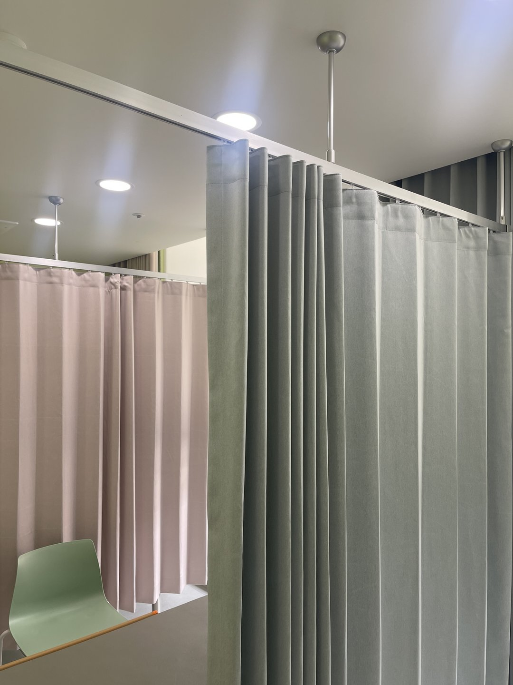
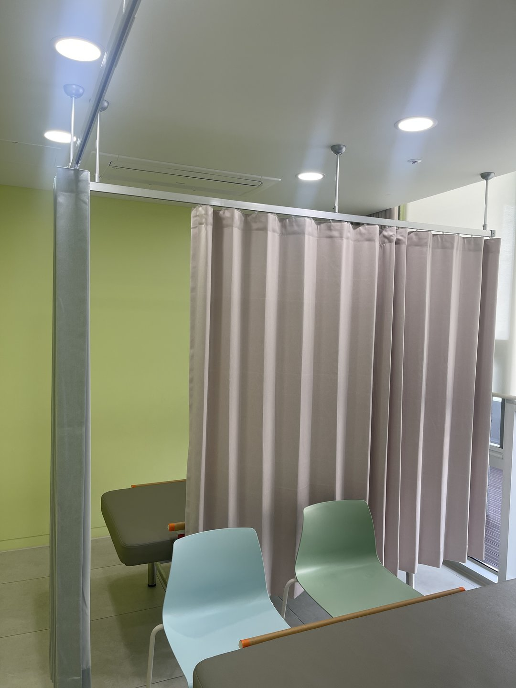
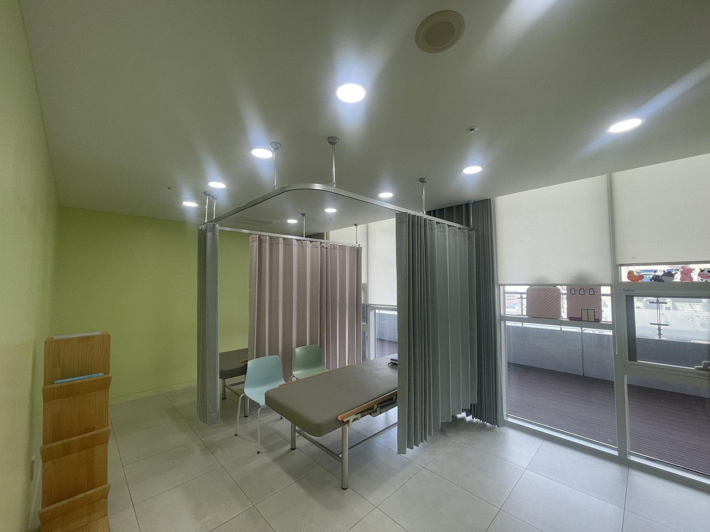
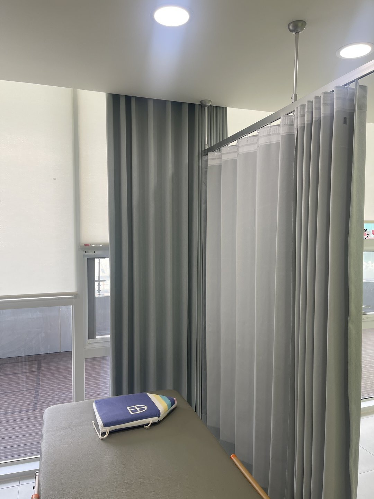
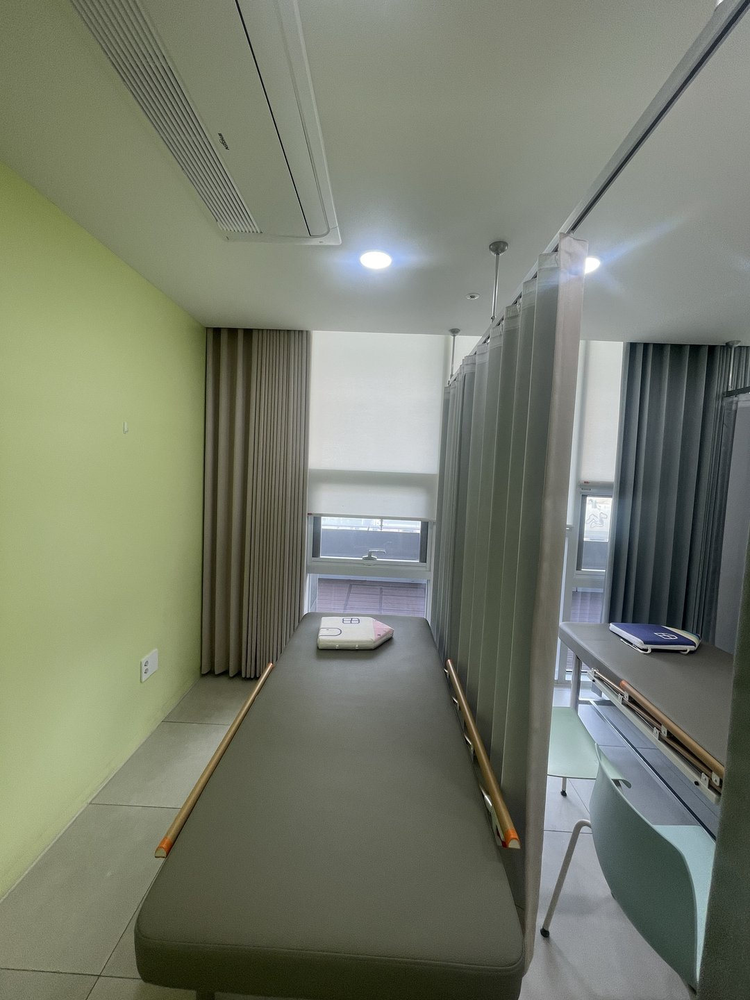

2026년 7월 13일 시공
영천 개인병원
처치실 병원커튼 시공후기

영천에 있는 개인병원 처치실 커튼 시공입니다. 베드마다 칸을 나누는 칸막이 커튼과 창측 롤스크린을 함께 잡았습니다.
병원 커튼은 집에 다는 커튼과 이름만 같고 챙기는 게 거의 다릅니다. 이 현장에서 실제로 정해야 했던 것들을 순서대로 적어보겠습니다.
커튼 위가 뚫려 있는 건 디자인이 아닙니다
병원 커튼을 자세히 보시면 위쪽 한 뼘 정도가 망(메쉬)으로 되어 있습니다. 원단이 모자라서도 아니고 멋도 아닙니다.
천장에 스프링클러가 있기 때문입니다. 스프링클러는 터지면 물을 우산처럼 옆으로 퍼뜨립니다. 그런데 커튼이 천장까지 꽉 막고 있으면 그 물이 커튼 안쪽 칸으로 못 들어갑니다.
베드에 누워 계신 분이 있는 칸이 정확히 그 안쪽입니다. 그래서 커튼 상부를 뚫어 살수가 그대로 통과하게 둡니다. 병원 커튼의 기본 사양이고, 이걸 빼면 커튼이 소방 설비를 가리는 물건이 됩니다.
레일을 천장에 딱 붙이지 않고 지지봉으로 조금 내려 매다는 것도 같은 맥락입니다. 사진에서 천장에서 내려온 은색 봉이 그것입니다.

원단은 방염 제품으로 갑니다
의료시설은 실내에 쓰는 커튼류를 방염 성능이 있는 제품으로 써야 하는 대상입니다. 선택 사항이 아닙니다.
방염은 불이 안 붙는다는 뜻이 아니라, 불이 닿아도 잘 번지지 않고 불꽃을 치우면 스스로 꺼지는 성질입니다. 커튼은 얇고 세로로 길게 걸려 있어서 한 번 붙으면 위로 순식간에 타 올라갑니다. 그래서 병원·학교·숙박시설처럼 사람이 누워 있거나 대피가 느린 곳부터 규제합니다.
실무에서는 원단을 고르는 폭이 그만큼 줄어듭니다. 예쁜 색을 먼저 고르고 방염이 되는지 찾는 게 아니라, 방염 원단 안에서 색을 고르는 순서가 됩니다. 이 순서를 바꾸면 상담이 두 번 됩니다.

레일을 직선으로만 달면 발치가 열립니다
칸막이 커튼에서 제일 자주 나오는 실수가 레일을 직선 한 줄로만 다는 것입니다. 그러면 베드 옆은 가려지는데 발치 쪽이 열립니다.
복도에서 지나가는 사람 눈높이가 정확히 그 열린 방향입니다. 옷을 걷고 처치를 받는 자리에서 이건 꽤 불편합니다.
그래서 레일을 ㄷ자로 감아 돌립니다. 머리맡 벽에서 시작해 옆을 지나 발치까지 돌아 나오게 잡으면 한 장으로 세 면이 닫힙니다.
여기서 중요한 게 곡선 구간의 반경입니다. 코너를 급하게 꺾으면 러너(고리)가 그 지점에서 걸립니다. 하루에 수십 번 여닫는 자리라, 걸리기 시작하면 간호사분이 힘을 줘서 당기게 되고 그러면 레일이든 커튼이든 먼저 상합니다. 반경을 넉넉히 잡는 게 몇 년 뒤 차이를 만듭니다.

커튼을 당기는 힘은 아래로만 가지 않습니다
커튼을 여닫을 때 손은 옆으로 당깁니다. 즉 레일에는 무게(아래)와 당기는 힘(옆)이 같이 걸립니다. 병원 커튼은 폭도 넓고 원단도 두꺼워서 이 힘이 가정집과 비교가 안 됩니다.
그래서 지지봉은 천장 마감재가 아니라 그 위 구조에 잡습니다. 텍스나 석고보드에만 박아두면 몇 달 뒤 봉이 흔들리기 시작하고, 흔들리면 레일이 미세하게 틀어져 커튼이 한쪽으로 쏠립니다.
간격도 중요합니다. 봉 사이가 너무 벌어지면 레일 가운데가 처집니다. 처지면 그 지점에서 러너가 뻑뻑해집니다. 곡선 구간은 힘이 몰리니까 직선보다 촘촘하게 잡습니다.

색은 병원의 기본값을 안 썼습니다
병원 커튼 하면 보통 하늘색이나 흰색입니다. 깨끗해 보이고 무난합니다. 다만 그건 수술실에서 굳은 기준이고, 처치실까지 같은 논리를 적용할 이유는 없습니다.
이 현장은 세이지그린과 더스티핑크로 갔습니다. 이유는 두 가지입니다.
하나는 벽입니다. 이 병원은 벽 한 면이 연두색입니다. 여기에 하늘색 커튼을 걸면 두 색이 서로 밀어냅니다. 세이지그린은 연두벽과 같은 계열이라 벽의 연장처럼 앉습니다.
다른 하나는 오는 사람입니다. 아이가 오는 곳입니다. 흰색과 하늘색은 아이 눈에 정확히 '병원 색'입니다. 채도를 낮춘 초록과 분홍은 같은 공간을 훨씬 덜 무섭게 만듭니다. 커튼은 면적이 커서 이 효과가 생각보다 큽니다.
핑크와 그린을 섞은 것도 의도입니다. 한 색으로만 채우면 칸 구분이 안 돼서, 간호사분이 "저쪽 커튼"이라고 말할 때 어디인지 모릅니다. 두 색이면 말로 위치를 가리킬 수 있습니다.

창에는 커튼과 롤스크린을 같이 씁니다
창측에는 커튼만 달지 않고 롤스크린을 같이 넣었습니다. 겹쳐 보이지만 하는 일이 다릅니다.
커튼은 시선을 막습니다. 처치 중에 창밖에서, 혹은 옆 건물에서 보이지 않게 하는 역할입니다.
롤스크린은 빛을 조절합니다. 처치대는 밝아야 하는데 직사광은 곤란합니다. 눈부시고, 베드에 누우면 천장 조명과 창빛이 같이 눈에 들어옵니다. 롤스크린을 반쯤 내리면 밝기는 남기고 눈부심만 걷힙니다.
이 둘을 커튼 하나로 하려면 원단을 두껍게 가야 하는데, 그러면 낮에도 조명을 켜야 합니다. 나눠 두면 그날 날씨와 시간에 맞춰 조절할 수 있습니다.
창측 롤스크린은 아이보리로 갔습니다. 창에 색을 넣으면 그 색이 실내 전체에 물들고 사람 얼굴색도 같이 변합니다. 진료하는 곳에서는 곤란합니다. 색은 벽과 칸막이에, 창은 무채색으로가 안전한 배분입니다.

바닥에서 띄우고, 떼어낼 수 있게 답니다
병원 커튼은 바닥에 닿지 않게 답니다. 가정집은 바닥에 살짝 끌리게 다는 경우도 있지만 여기서는 안 됩니다.
매일 물걸레와 소독액이 지나가는 자리입니다. 끝단이 바닥에 닿으면 그 부분이 젖고, 젖은 채로 접혀 있으면 곰팡이가 생깁니다. 청소하는 분 입장에서도 커튼을 들춰가며 닦아야 해서 결국 그 밑이 안 닦입니다.
그리고 떼어내기 쉽게 답니다. 병원 커튼은 정기적으로 세탁하거나 교체합니다. 고리 방식으로 잡아두면 커튼만 쓱 빼서 세탁하고 다시 걸 수 있습니다. 이걸 고려 안 하고 고정식으로 달면 세탁할 때마다 사람을 불러야 합니다.

시공 정보
지역 : 경상북도 영천시 (개인병원)
공간 : 처치실 베드 칸막이 + 창측
제품 : 방염 칸막이 커튼(세이지그린·더스티핑크, 상부 메쉬) · 아이보리 롤스크린
포인트 : 스프링클러 대응 상부 메쉬 / 방염 원단 / ㄷ자 곡선 레일 / 천장 지지봉 구조 고정 / 바닥 이격 / 고리식 탈부착 / 커튼·롤스크린 역할 분리
작업 시간 : 1일
시공일 : 2026년 7월 13일
자주 묻는 질문
Q. 병원 커튼 위가 왜 망으로 되어 있나요?
스프링클러 살수가 커튼 안쪽 칸까지 들어가게 하기 위해서입니다. 천장까지 막아버리면 커튼이 소방 설비를 가리게 됩니다. 디자인이 아니라 안전 사양입니다.
Q. 병원 커튼은 아무 원단이나 되나요?
안 됩니다. 의료시설은 커튼류를 방염 성능이 있는 제품으로 써야 하는 대상입니다. 원단 선택 폭이 좁아지므로 방염 원단 안에서 색을 고르는 순서로 진행합니다.
Q. 레일은 꼭 곡선이어야 하나요?
베드를 감싸야 하면 그렇습니다. 직선 한 줄만 달면 발치 쪽이 열려 복도에서 안이 보입니다. 곡선 구간은 반경을 넉넉히 잡아야 러너가 안 걸립니다.
Q. 천장이 텍스인데 달 수 있나요?
됩니다. 다만 텍스에 직접 잡지 않고 그 위 구조를 찾아 지지봉을 앵커로 고정합니다. 커튼은 옆으로 당기는 힘이 커서 마감재에만 잡으면 몇 달 뒤 흔들립니다.
Q. 커튼이 한쪽으로 자꾸 쏠립니다.
레일이 처졌거나 수평이 틀어졌을 가능성이 큽니다. 지지봉 간격이 넓으면 가운데가 내려앉습니다. 곡선 구간은 직선보다 촘촘히 잡아야 합니다.
Q. 커튼 세탁은 어떻게 하나요?
고리 방식으로 달아두면 커튼만 빼서 세탁하고 다시 걸 수 있습니다. 시공할 때 이걸 전제로 잡아두는 게 좋습니다. 고정식으로 달면 세탁할 때마다 사람을 불러야 합니다.
Q. 병원 커튼으로 방음이 되나요?
안 됩니다. 상부가 메쉬로 뚫려 있고 밑단도 바닥에서 떠 있어 구조적으로 소리가 넘어갑니다. 대화가 새면 안 되는 상담실은 벽으로 가셔야 합니다.
Q. 창은 커튼만으로 안 되나요?
됩니다만 권하지 않습니다. 커튼은 시선, 롤스크린은 빛으로 나누는 쪽이 낫습니다. 하나로 하려면 원단을 두껍게 가야 하고 그러면 낮에도 조명을 켜야 합니다.
Q. 영천도 방문 시공 되나요?
됩니다. 영천, 포항, 경주, 안동, 영주, 의성, 영덕, 청송, 봉화, 울진 일대는 따솜커튼블라인드 이실장(010-2825-7275)이 직접 방문해 실측하고 시공합니다.
마무리
병원 커튼은 완성된 뒤에 보면 그냥 커튼입니다. 그런데 정하는 항목이 가정집과 거의 겹치지 않습니다. 스프링클러, 방염, 곡선 반경, 지지봉 간격, 바닥 이격, 탈부착.
이 중 하나만 빠뜨려도 몇 달 뒤에 티가 납니다. 커튼이 쏠리거나, 밑단에 곰팡이가 피거나, 세탁할 때마다 사람을 불러야 하거나.
쓰는 사람이 매일 여닫는 물건이라, 처음에 한 번 제대로 잡아두는 편이 결국 싸게 끝납니다.
비슷한 시공이 필요하신가요?
천장에 스프링클러가 있는지, 마감이 텍스인지, 베드가 어떻게 놓이는지.
이 세 가지가 같이 보이게 찍은 사진 한 장 주시면 방문 전에 견적을 알려드립니다.